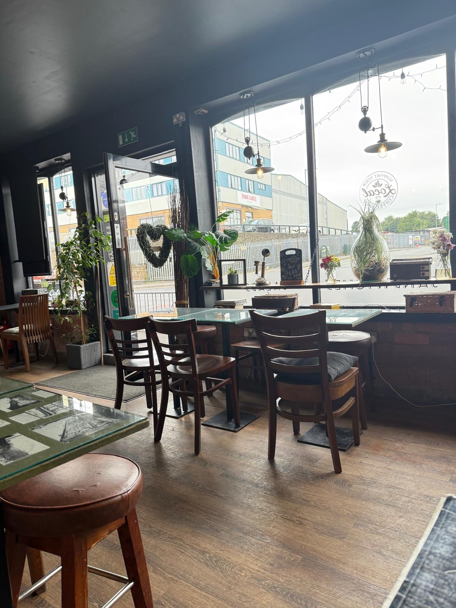
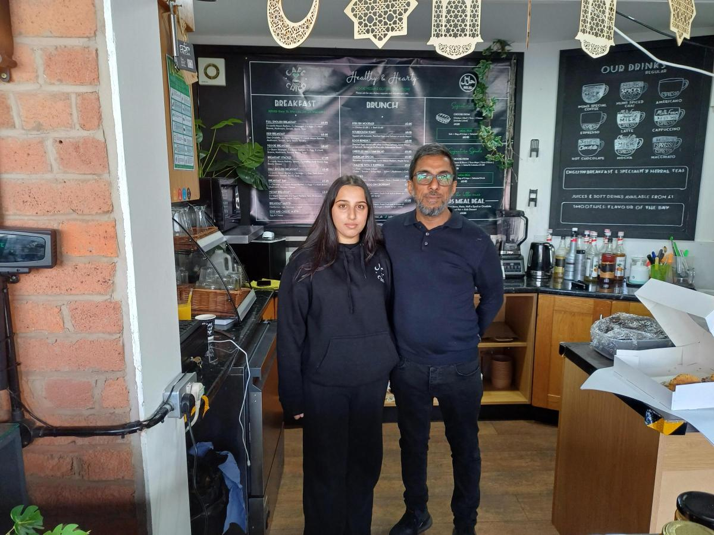
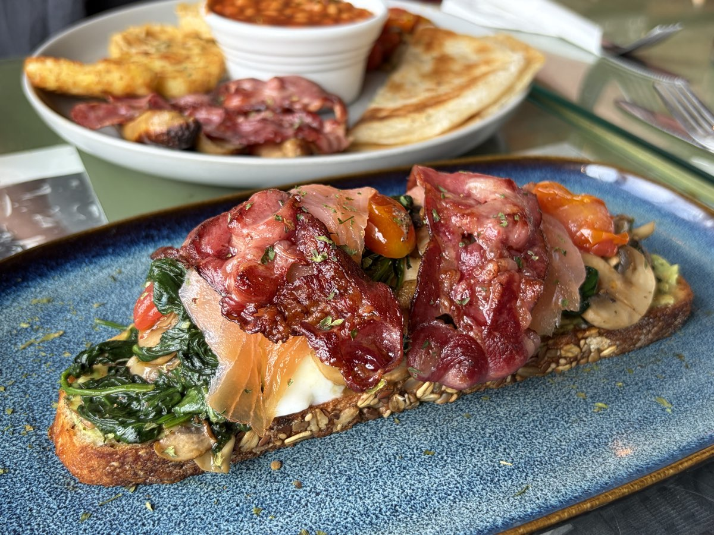
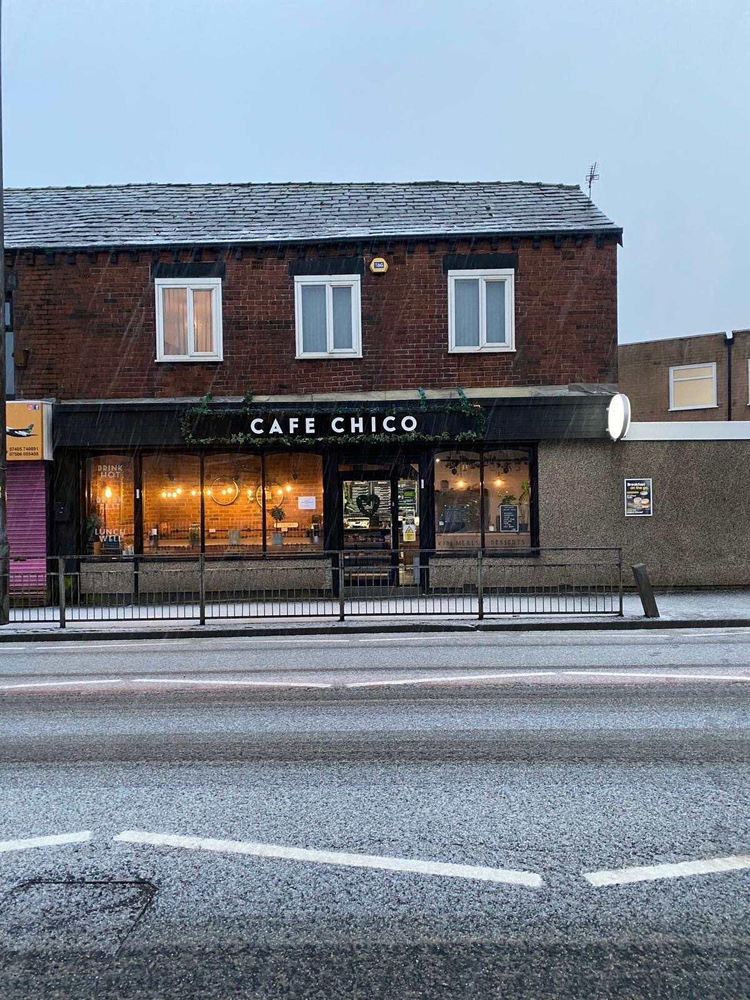

Our story
Fresh food, not fast food —
built by family, for the neighbourhood.

A café run by family.
Nestled in the heart of Bolton, Café Chico is a proudly family-run café built on one simple philosophy: fresh food, not fast food. Every dish is freshly cooked to order using quality, locally sourced ingredients, including free-range eggs, with all meats being halal. Whether you're joining us for a hearty breakfast, relaxed brunch, artisan coffee or one of our homemade treats, you'll always receive a warm welcome.

Bolton's hidden gem.
Proudly holding a 5-Star Food Hygiene Rating and an outstanding 4.9-star Google rating, Café Chico has become one of Bolton's favourite hidden gems — renowned for exceptional customer service, freshly prepared food and a welcoming atmosphere that brings people together.
★ 4.9 Google ★ 5 Food Hygiene Tripadvisor Travellers' Choice 2024
The café we built with our own hands.
What makes Café Chico truly unique is the story behind the building itself. Rather than commissioning an expensive fit-out, the café was lovingly designed and handcrafted by the owner and her dad, who transformed the space by embracing the 3R principles — Regenerate, Reuse and Recycle.
From reclaimed timber and repurposed materials to restored furniture and creative design features, they breathed new life into what was once an empty shell — creating the warm, rustic café our customers know and love today. Every corner tells a story of creativity, sustainability and family.

More than a café — a community hub.
Our vision has always extended beyond serving great coffee and food. Café Chico was created to be a community hub that celebrates Bolton's rich multicultural heritage while inspiring sustainable living. Over the next three years, we aim to expand this vision by developing a true Farm-to-Fork approach — working with local growers, promoting healthy eating, reducing waste through circular practices and creating educational opportunities for families and young people.
We are passionate about building stronger community partnerships, supporting local businesses, creating opportunities for local people and encouraging environmental responsibility through sustainable initiatives.
"Great food can bring people together — but great communities are built through collaboration, creativity and care."